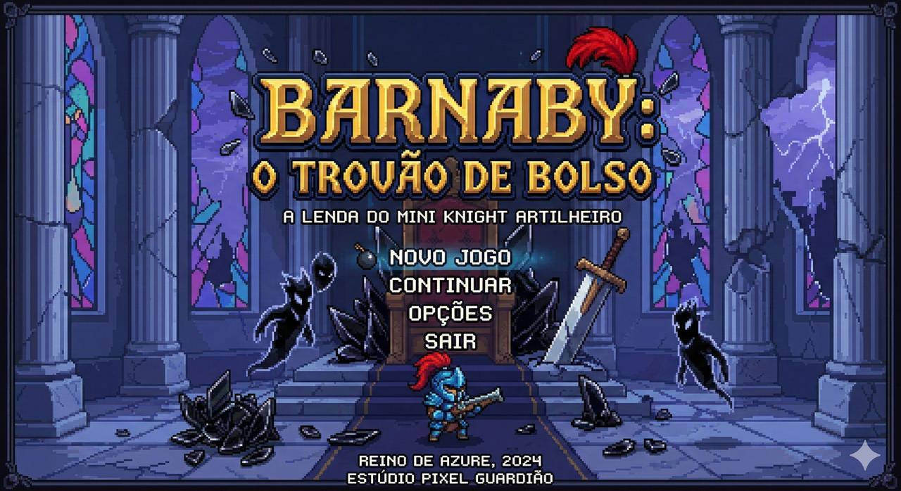
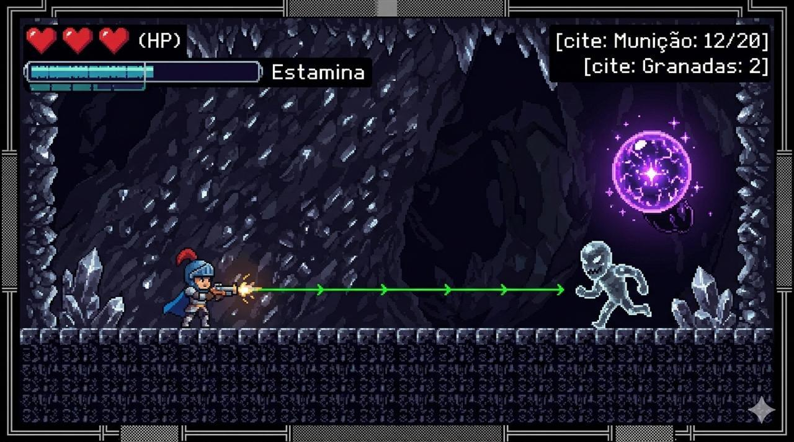
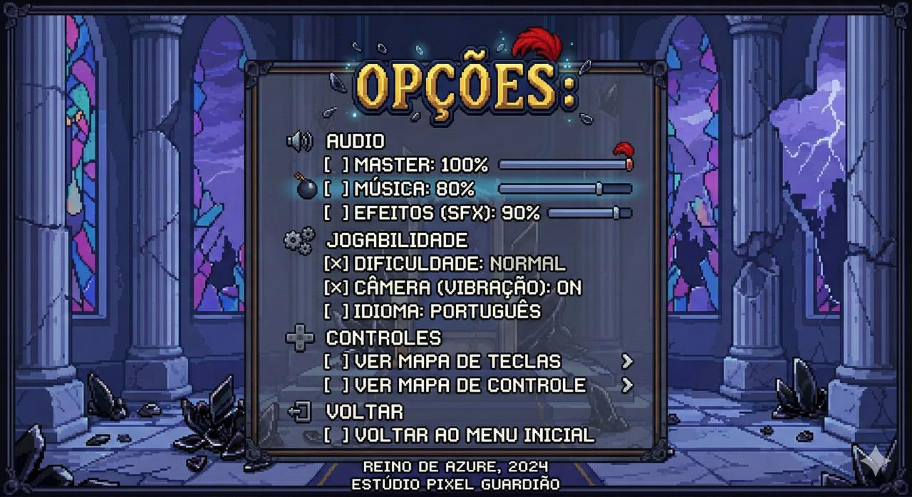
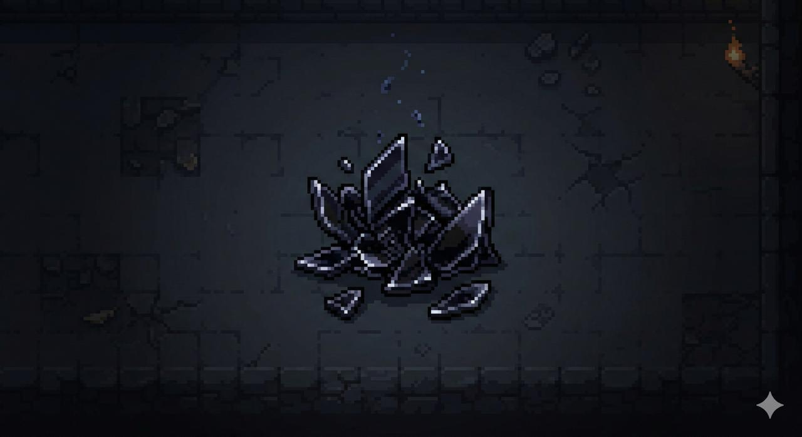

INFANTARIA
Shard Stalkers
Feitos de vidro claro. Rápidos, agressivos, com braços em forma de lâminas. Avançam cegamente para combate corpo a corpo.
Estúdio Pixel Guardião · 2026
A lenda do mini knight artilheiro.
< CAPÍTULO 01 >
No imponente Reino de Azure, o valor de um cavaleiro é medido pelo tamanho de sua espada.
Mas quando os imortais Wraiths de Vidro invadem o castelo, a força bruta falha. Gigantes de armadura caem um a um. Espadas se estilhaçam nas lâminas cristalinas dos invasores.
Apenas o menor dos cavaleiros — armado com agilidade e pólvora — pode estilhaçar essa ameaça.
Barnaby não era para ser o herói. Não era para ninguém olhar duas vezes para ele. Mas às vezes, o destino tem um senso de humor estranho.
< CAPÍTULO 02 >
Trailer oficial em produção.
TRAILER OFICIAL
Em produção · Estúdio Pixel Guardião
< CAPÍTULO 03 >
PROTAGONISTA
O menor cavaleiro do reino. Usa uma armadura leve de escamas de dragão-mirim e um elmo com penacho vermelho. Carrega a lendária "Trovejadora de Bolso".
MECÂNICAS 2D
< CAPÍTULO 04 >
INFANTARIA
Feitos de vidro claro. Rápidos, agressivos, com braços em forma de lâminas. Avançam cegamente para combate corpo a corpo.
ARTILHARIA
Criaturas flutuantes de vidro negro puro. Mantêm distância e disparam projéteis de energia sombria em arcos.
BOSS
Guardião da horda. Amálgama de estilhaços fundidos a um reator mágico. Destruí-lo transforma todo o exército inimigo em pó.
< CAPÍTULO 05 >
Fundação · Refúgio
O lar escondido de Barnaby. Ambientes apertados, música lenta e atmosférica. Inimigos mais lentos e terreno desenhado para ensinar a mecânica de tiro.
Superfície · Escala gigante
A superfície projetada para gigantes. Arquitetura opressiva exige saltos precisos. Wraiths com escudos de vidro e vitrais quebrando ao fundo.
Clímax · Sala do Trono
Plataformas flutuantes sobre abismos, música orquestral épica, espaços apertados com hordas pesadas. O último suspiro do reino.
< CAPÍTULO 06 >
Telas reais do protótipo.




< CRÉDITOS >
Caio Costa
Game Design · Programação
Cesar Aranha
Pixel Art · Animação
Pedro Henrique
Level Design · Narrativa
Leticia Farias
Áudio · Trilha
Estúdio Pixel Guardião · 2026.1 · Feito para a 2ª avaliação